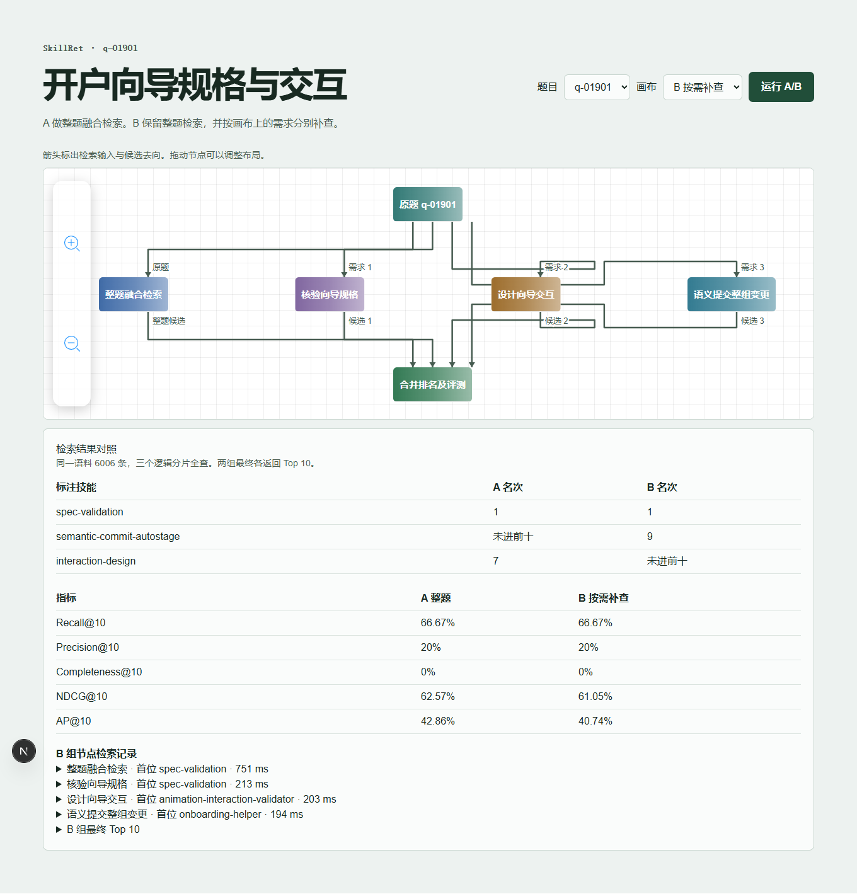

q-01901 开户向导规格与交互
语义提交技能由未进前十升至第 9，interaction-design 从第 7 掉出前十。召回持平，NDCG 下降。
A/B 指标
| 指标 | A 整题 | B 按需求补查 |
|---|
| Recall@10 | 66.67% | 66.67% |
| Precision@10 | 20.00% | 20.00% |
| Completeness@10 | 0.00% | 0.00% |
| NDCG@10 | 62.57% | 61.05% |
| AP@10 | 42.86% | 40.74% |
数据集标注技能的名次
| 标注技能 | A | B |
|---|
| spec-validation | 1 | 1 |
| semantic-commit-autostage | 未进前十 | 9 |
| interaction-design | 7 | 未进前十 |
原题与 B 组各节点
整题融合检索
We have a SuperSpec document (`specs/onboarding-flow.superspec.yaml`) that describes our new user onboarding wizard for the "Canopy" fintech app — it covers a multi-step account setup with identity verification, funding source selection, and a portfolio preferences questionnaire. Before we start building, I need you to go through the spec and check it for correctness, completeness, and proper SuperSpec formatting (flag any missing edge cases, inconsistent state transitions, or ambiguous acceptance criteria). Then, based on what the spec describes, design the full interaction layer for the wizard: step-to-step transitions with directional slide animations, inline field validation micro-interactions (shake + red glow on error, green checkmark fade-in on success), a pulsing skeleton loader for the identity verification async check, hover/focus states for all interactive elements that meet WCAG 2.1 AA, and a celebratory confetti burst on completion. Document all of this as a new `docs/onboarding-interactions.md` file alongside any fixes or annotations you make to the spec itself, then auto-stage everything and commit with a proper semantic commit message — I want this fully committed without me having to manually stage files since I'm handing the whole changeset to you.
- spec-validation
- interaction-design
- using-superpowers-sdd
- audio-effect
- implementation-spec
- spec-interview
- interaction-design
- animation-interaction-validator
- disciplined-specification
- specification-phase
核验向导规格
Validate specs/onboarding-flow.superspec.yaml for required structure, completeness, edge cases, consistent state transitions, and testable acceptance criteria for identity, funding and preferences.
- spec-validation
- spec-flow-analyzer
- spec-validator
- flow-next-interview
- openspec-check
- test-spec
- spec-verification
- ac-expander
- requirement-validator
- spec-interview
设计向导交互
Specify multi-step onboarding transitions, inclusive focus and hover states, error and success feedback, skeleton loading during async identity verification, and final completion interaction.
- animation-interaction-validator
- state-machine
- interaction-design
- ux-component-states
- interaction-design
- tailwindcss-animations
- recovery-app-onboarding
- ui-animation
- Example Skill
- form-wizard-builder
语义提交整组变更
Stage the storefront onboarding specification corrections and onboarding-interactions documentation together, then prepare one semantic commit message for the changeset.
- onboarding-helper
- semantic-commit-autostage
- git-commit-standards
- git-workflow-management
- git-commit
- shipping-methodology
- review-and-commit
- full-dev-cycle
- commit-coauthor
- recovery-app-onboarding
最终候选
A Top 10
- spec-validation
- interaction-design
- using-superpowers-sdd
- audio-effect
- implementation-spec
- spec-interview
- interaction-design
- animation-interaction-validator
- disciplined-specification
- specification-phase
B Top 10
- spec-validation
- interaction-design
- using-superpowers-sdd
- spec-flow-analyzer
- spec-validator
- animation-interaction-validator
- state-machine
- onboarding-helper
- semantic-commit-autostage
- audio-effect
RSI 实测截图
